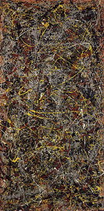
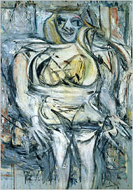
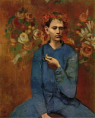
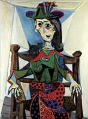
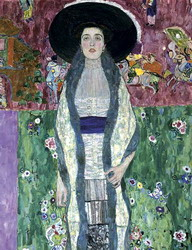
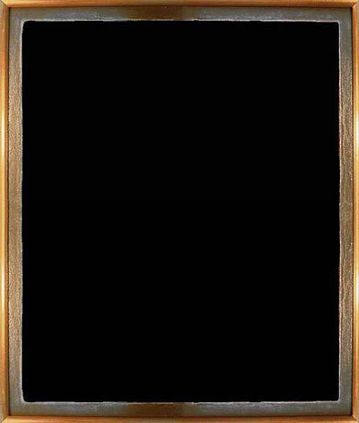
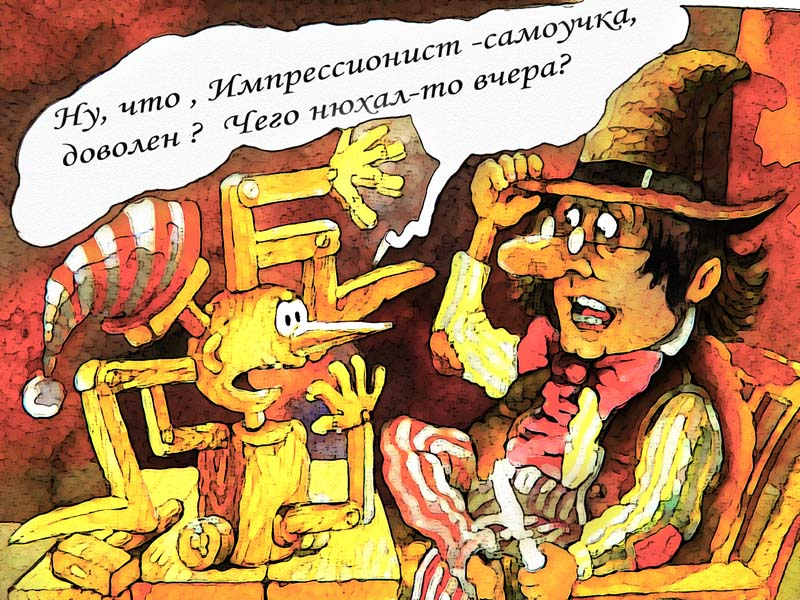

Современное искусство: самые дорогие картины мира
Некогда в переписке с Дзентеррористом я высказывался по поводу т.н. "современного искусства". Сейчас попалось под руку несколько картинок, решил выложить как иллюстрацию.
http://www.art-spb.ru/artspb102.html
Публикую первую десятку, по ссылке их 192.
|  |
Джексон Поллок 244 - 122 см |
|  |
Виллем де Кунинг 171 - 121 см |
 |
Густав Климт |
 |
Пабло Пикассо 1932 |
|  |
Пабло Пикассо |
 |
Энди Уорхол |
|  |
Пабло Пикассо |
|  |
Густав Климт |
 |
Фрэнсис Бэкон |
 |
Винсент ван Гог |
|  |
"Битва негров в глубокой пещере тёмной ночью" (1893). Автор, писатель-юморист и художник
(видимо, тоже юморист) Alphonse Allais (Альфонс
Алле), очевидно, не настаивал ни на его
творческости, ни интеллектуальности, как это
сделали впоследствии поклонники "творчества"
знаменитого "русского" "художника", высматривая
в темной пещере Картина написана именно как шутка лет за 20 до "Черного квадрата" Малевича. Что еще рисовал Малевич -- см. здесь. |
В общем виде по "современному искусству":

(с) http://ivar59.livejournal.com/
Примечание: я не ставил целью собрать "самое-самое", просто попались практически подряд три этим ссылки -- синхронизация, однако -- вот и решил выложить. А так -- чего только нет в "современном искусстве", самое безобидное -- горы мусора как инстралляции, уборщицы иногда выкидывали, нанося непоправимый ущерб "шедеврам"....